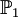
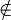
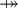
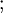
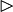
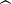

Rodin Keyboard User Guide
From Event-B
|
Introduction
This short help page provides necessary information on the Rodin Keyboard plug-in and also on how to extend the plug-in.
Getting Started
Overview
The Rodin Keyboard plug-in creates a view (namely "Rodin Keyboard") under Event-B category.
You can open "Rodin Keyboard" view now:
- Go to Window/Show View/Other.
- Choose the "Rodin Keyboard" view from the Event-B category.
The view contains a text area which takes an ASCII input and translate it into the mathematical language (defined by extensions).
Special Combos
Below are the special combos (set of ASCII characters) and their translations into the Event-B mathematical language.
| ASCII | LaTeX | Math | Meaning | Unicode |
|---|---|---|---|---|
NAT | \nat | The set of natural numbers | U+2115 | |
NAT1 | \natn |  | The set of positive natural numbers | U+2115 U+0031 |
INT | \intg | The set of integer numbers | U+2124 | |
POW | \pow |  | The set of all subsets (power set) | U+2119 |
POW1 | \pown |  | The set of all non-empty subsets | U+2119 U+0031 |
( | ( | ( | Left parenthesis | U+0028 |
) | ) | ) | Right parenthesis | U+0029 |
<=> | \leqv |  | Logical equivalence | U+21D4 |
=> | \limp |  | Logical implication | U+21D2 |
& | \land |  | Logical conjunction | U+2227 |
or | \lor |  | Logical disjunction | U+2228 |
not | \lnot |  | Not sign | U+00AC |
true | \btrue |  | True predicate | U+22A4 |
false | \bfalse |  | False predicate | U+22A5 |
! | \forall |  | For all | U+2200 |
# | \exists | There exists | U+2203 | |
, | , | , | Comma | U+002C |
. | \qdot |  | Middle dot | U+00B7 |
= | = | = | Equal to | U+003D |
/= | \neq |  | Not equal to | U+2260 |
< | < | < | Less than | U+003C |
<= | \leq | Less than or equal to | U+2264 | |
> | > | > | Greater than | U+003E |
>= | \geq | Greater than or equal to | U+2265 | |
: | \in |  | Element of | U+2208 |
/: | \notin |  | Not an element of | U+2209 |
<<: | \subset |  | (Proper) Subset of | U+2282 |
/<<: | \notsubset |  | Not a (proper) subset of | U+2284 |
<: | \subseteq |  | Subset of or equal to | U+2286 |
/<: | \notsubseteq |  | Neither a subset of nor equal to | U+2288 |
<-> | \rel |  | Relation | U+2194 |
<<-> | \trel |  | Total relation | U+E100 |
<->> | \srel |  | Surjective relation | U+E101 |
<<->> | \strel |  | Total surjective relation | U+E102 |
+-> | \pfun |  | Partial function | U+21F8 |
--> | \tfun |  | Total function | U+2192 |
>+> | \pinj |  | Partial injection | U+2914 |
>-> | \tinj |  | Total injection | U+21A3 |
+>> | \psur |  | Partial surjection | U+2900 |
->> | \tsur |  | Total surjection | U+21A0 |
>->> | \tbij |  | Bijection | U+2916 |
{ | { | { | Left curly bracket | U+007B |
} | } | } | Right curly bracket | U+007D |
|-> | \mapsto |  | Maplet | U+21A6 |
,,
| ||||
{} | \emptyset |  | Empty set | U+2205 |
/\ | \binter |  | Intersection | U+2229 |
\/ | \bunion | Union | U+222A | |
\ | \setminus |  | Set minus | U+2216 |
** | \cprod |  | Cartesian product | U+00D7 |
[ | [ | [ | Left square bracket | U+005B |
] | ] | ] | Right square bracket | U+005D |
<+ | \ovl |  | Relation overriding | U+E103 |
circ | \bcomp |  | Backward composition | U+2218 |
; | \fcomp |  | Forward composition | U+003B |
>< | \dprod |  | Direct product | U+2297 |
|| | \pprod |  | Parallel product | U+2225 |
~ | \conv | ~ | Tilde operator | U+223C |
<| | \domres | Domain restriction | U+25C1 | |
<<| | \domsub |  | Domain subtraction | U+2A64 |
|> | \ranres |  | Range restriction | U+25B7 |
|>> | \ransub |  | Range subtraction | U+2A65 |
% | \lambda | λ | Lambda | U+03BB |
INTER | \Inter |  | N-ary intersection | U+22C2 |
UNION | \Union |  | N-ary union | U+22C3 |
| | \mid |  | Such that | U+2223 |
.. | \upto | Upto sign | U+2025 | |
+ | + | + | Addition sign | U+002B |
- | - | - | Subtraction sign | U+2212 |
* | * | * | Multiplication sign | U+2217 |
/ | \div |  | Division sign | U+00F7 |
^ | \expn |  | Exponentiation sign | U+005E |
oftype | \oftype | | Typing operator | U+2982 |
:= | \bcmeq |  | Becomes equal to | U+2254 |
:: | \bcmin |  | Becomes an element of | U+003A U+2208 |
:| | \bcmsuch |  | Becomes such that | U+003A U+2223 |
Concepts
Rodin Keyboard View
The view contains a text area where ASCII input can be typed in. The text will be translated into the mathematical language (which is extensible) when there is a modification of the text. The translation is done for the whole text spanned over multiple lines.
Below is an example of the view which is attached to the bottom area of the workbench.

Tasks
Entering a Mathematical Formula
A formula in the mathematical language of Event-B can be typed in the text area of the Rodin Keyboard view. The view will translate the formula from ASCII into the mathematical language as specified here. The formula can be copied as normal (Unicode) text.
Changing the Font
In order to display the Unicode characters for the mathematical language, there is a special font associated with the text area. This font can be changed in the Preferences page associated with the Colors and Fonts. It can be opened from the category "General/Appearance/Colors And Fonts". Any font can be chosen, but mathematical language formulas can be displayed correctly only if the chosen font contains the Unicode characters for the mathematical language. From the Preferences page, you can choose the font, the style and the size for the text area.
More information about the Preferences page can be found here.
Extending the Keyboard
There is an extension point to extend the keyboard namely org.rodinp.keyboard.symbols. An example of using this extension point is shown below.
<extension
point="org.rodinp.keyboard.symbols">
<symbol
combo="not"
id="neg"
name="%negName"
translation="¬" />
<symbolProvider
class="my.package.name.MyClassProvidingSymbols" />
</extension>
The first extension contributes a symbol with all the details for translating an ASCII combination into a symbol. The second extension contributes a class. This class will be instantiated by the Rodin Keyboard plug-in to fetch additional symbol definitions. This allows for contributing new symbols dynamically.
Reference
Release Notes
See the Keyboard Release History.
Preferences
The Preferences page is used to change the font of the text area in the Rodin Keyboard view. You can access it from the "General/Appearance/Colors and Fonts" page.
A sample of this preferences page is shown below.

The button "Change Font" is used to choose a new font. A pop-up dialog will be open and you can choose from the set of system fonts. The button "Reset" is used to set the font to the default Brave Sans Mono font.
There are four other buttons at the bottom of the page:
- Restore Default: Restore the default fonts. It does not affect the Keyboard view.
- Apply: Apply the current chosen font for the Keyboard view.
- OK: Store the preference values to the preference store and close the page. It also applies the current chosen font for the Keyboard view.
- Cancel: Close the page immediately without saving the preference values. Obviously, this does not affect the Keyboard view.
Samples
Expression
TODO
Jumping
TODO